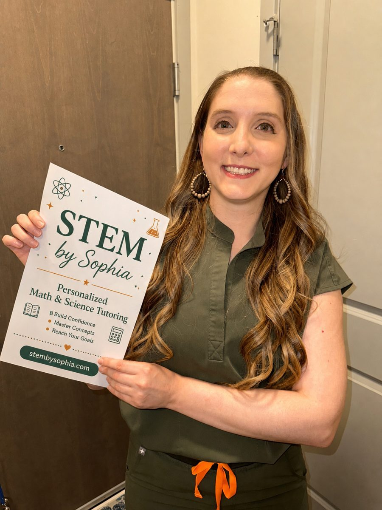

Madison & online • STEM tutoring and mentorship
Personalized STEM mentorship that builds real understanding.
STEM by Sophia offers warm, high-level academic support from an MD/PhD student, Johns Hopkins-trained engineer, and biomedical AI researcher.
Confidence. Clarity. Advancement.

Areas of mentorship
Four ways to work together.
Personalized one-on-one support across test prep, tutoring, and coaching, in Madison and online. Choose a path to see packages and details.
MCAT Prep
Five packages from a 99th-percentile scorer, 6 to 30 sessions of personalized content review and test strategy.
Explore MCAT prep →ACT & SAT Prep
Targeted test strategy, timing, and section skills that turn practice into real score gains.
Explore test prep →STEM Tutoring
Math, science, coding, and data science for high school, college, and graduate students.
Explore tutoring →Academic Coaching
Executive function, study systems, and accountability, with affirming support for neurodivergent students.
Explore coaching →A calm, rigorous learning environment
Designed to make hard subjects feel organized and approachable.
Students often struggle not because they are incapable, but because the material has been presented as disconnected facts or procedures. I help students build a map: what matters, how ideas connect, and how to reason through unfamiliar problems.
“Students learn best when the material finally feels organized, understandable, and less intimidating.”
Teaching philosophy
Deep understanding first. Scores and confidence follow.
Many students are taught to memorize procedures before they understand what a problem is really asking. STEM by Sophia starts with structure: what the concept means, how pieces connect, and how to recognize patterns across problems.
Conceptual clarity
Lessons emphasize why methods work, not just which formula to use.
Personalized structure
Each session adapts to the student’s course, teacher, exam timeline, and confidence level.
Mentorship beyond homework
Students receive guidance on study habits, test strategy, scientific curiosity, and long-term STEM growth.
About Sophia
A STEM mentor with scientific depth and a human-centered teaching style.
I’m Sophia, an MD/PhD candidate and biomedical AI researcher with a background in biomedical engineering, applied mathematics, and data science. I trained at Johns Hopkins and now mentor students across math, biology, coding, data science, medicine, and research-oriented STEM pathways.
My goal is to help students feel capable in difficult subjects. I combine rigorous scientific thinking with patience, warmth, and individualized explanations so students can build skills that last beyond one exam.

Best fit students
- AP, IB, college, MCAT, or advanced STEM learners
- Students who need conceptual clarity, not just homework answers
- Curious students interested in medicine, engineering, coding, AI, or research
- Students who are anxious, overwhelmed, neurodivergent, or perfectionistic
What families can expect
Premium tutoring that feels organized, thoughtful, and personal.
“Through Sophia’s valuable insight and creative teaching, I was able to actually enjoy tutoring and maximize my opportunities of getting the scores I wanted. Most importantly, she taught me how to believe in myself.”
Before sessions
Goals are clarified so sessions are focused, efficient, and responsive to class expectations or exam timelines.
During sessions
Students practice active reasoning, targeted problem-solving, and explaining ideas in their own words.
After sessions
Students leave with clearer next steps, stronger study strategy, and a better sense of control over hard material.
Now accepting a small number of students
Interested in working together?
Start by booking a free consultation so I can learn about your student's grade level, subject, goals, and whether virtual or Madison-area in-person sessions are the best fit.